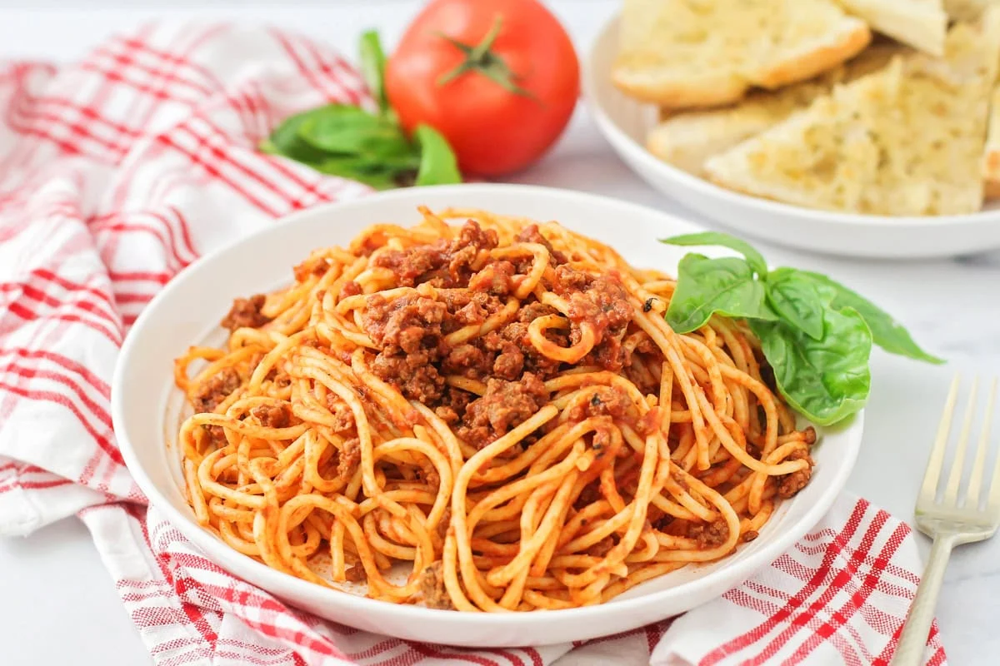

Recipe Details
Prep Time: 15 minutes
Cook Time: 45 minutes
Servings: 5 people
Difficulty: Medium
Ingredients
- 200g spaghetti
- 300g minced beef
- 2 cloves garlic (chopped)
- 1 onion (diced)
- 400g canned tomatoes
- 2 tablespoons groundnut oil
- Salt and pepper to taste
Instructions
- Boil water and cook the spaghetti according to package instructions.
- Heat olive oil in a pan and sauté onions and garlic.
- Add minced beef and cook until browned.
- Pour in canned tomatoes and let simmer for 20 minutes.
- Season with salt and pepper, then serve over spaghetti.
Tips
Pro Tip: Let the sauce simmer longer for a richer flavor.
Dish Preview
